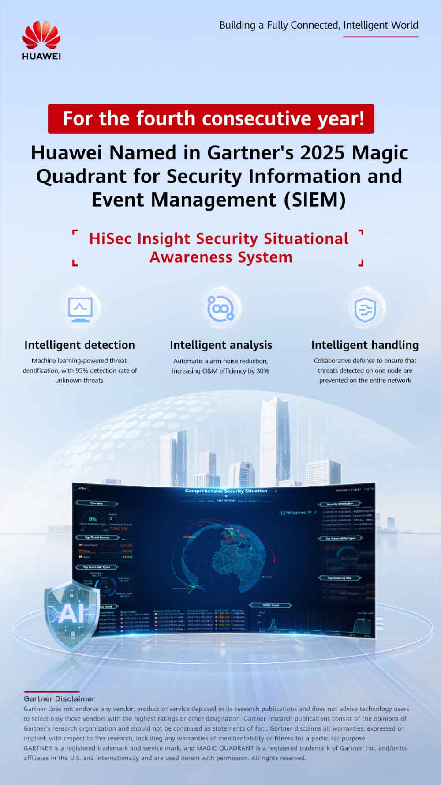

<html>
<title>Huawei Tanıtım</title>
<link rel="stylesheet" type="text/css" href="../haberler.css">
<meta charset="UTF-8">
</html>


<body>


<div class="navigasyon_bar">

	<a href="../haberler.html"> <div class="ic_div">  </div> </a>
	

	<a href="../../huawei_hakkında/huawei_hakkinda.html"> <div class="ic_div"> Huawei Hakkında </div> </a>
	<a href="../../urunler/urunler.html"> <div class="ic_div"> Ürünler </div> </a>

	<a href="../../sürdürülebilirlik/sürdürülebilirlik.html"> <div class="ic_div"> Sürdürülebilirlik </div> </a>

	<a href="../../eğitim/egitim.html"> <div class="ic_div"> Eğitim </div> </a>
	<a href="../../haberler/haberler.html"> <div class="ic_div"> Haberler </div> </a>

</div>

<!------------------------------------------------------------>

<div class="haber_sayfasi">
<h1 class="baslik">
Huawei, sektörler genelinde dijital ve akıllı dönüşümü hızlandıran "Imagine Wi-Fi 7 to Reality" programının 4. sezonunu tamamladı.</h1>

<p class="metin">
<br><br><br>

[Pekin, Çin, 15 Ekim 2025] Gartner®, yakın zamanda Güvenlik Bilgi ve Olay Yönetimi (SIEM) 2025 için Sihirli Dörtlüsünü yayınladı ve temel ürün yetenekleri ve pazar performansı da dahil olmak üzere birçok boyutta küresel SIEM tedarikçilerini derinlemesine değerlendirdi. Huawei, HiSec Insight güvenlik durumsal farkındalık sistemiyle, Uygulama Yeteneği ve Vizyonun Bütünlüğü kategorilerinde bir kez daha takdir edildi.
<br><br>

Bu rapor, yaklaşık 140 ayrıntılı değerlendirme kriterine dayanarak, küresel SIEM tedarikçilerinin kapsamlı ve çok boyutlu bir analizini sunmaktadır. SIEM ürünlerinin 15 temel yeteneği ve temel işlevine ilişkin derinlemesine bir değerlendirme sunmaktadır. Çalışma, güvenlik ve risk yönetimi liderlerine bu alandaki tedarikçileri etkili bir şekilde değerlendirmede yardımcı olmak üzere tasarlanmıştır.
<br><br>


Dört yıl üst üste Magic Quadrant'a dahil edilen tek Çinli tedarikçi olarak Huawei'nin, HiSec Insight Güvenlik Durumu Farkındalık Sistemi'nin olağanüstü ürün yeteneklerini ve net ve tutarlı bir inovasyon yolunu sergilediğine inanıyoruz. Kanaatimizce, bu tanınma hem profesyonel onayı hem de HiSec Insight platformunun güçlü pazar doğrulamasını yansıtmaktadır.
<br><br>



Xinghe Yapay Zeka Ağı'nın "güvenlik analizi beyni" olarak işlev gören Huawei'nin HiSec Insight güvenlik durumsal farkındalık sistemi, gelişmiş kurumsal desteği, yapay zekaya hazır iş akışları ve gelişen ürün stratejisiyle öne çıkıyor ve akıllı tespit, analiz ve müdahalede olağanüstü yetenekler sergileyerek SIEM verimliliğini artırıyor.
<br><br><br>

Akıllı tespit : Huawei, hassas tehdit tespiti, otomatik yanıt, yapay zeka destekli uyarı gürültüsü azaltma ve saldırı yolu analizi gibi temel yetenekleri geliştirmek için SIEM'de yapay zekanın uygulanmasını aktif olarak araştırıyor. Büyük veri platformu üzerine kurulu ve makine öğrenimiyle desteklenen HiSec Insight, sızma, kalıcılık, ayrıcalık yükseltme ve veri sızdırma dahil olmak üzere APT saldırı zincirinin her aşamasındaki tehditleri tespit eder. Günlük korelasyonu ve C&C iletişimi, gizli kanallar ve dosyalardaki, e-postalardaki, trafikteki ve web sayfalarındaki anormalliklerin tespiti için modeller içerir; bu da bilinmeyen tehditler için %95 tespit oranıyla gelişmiş tehditlerin korelasyon tabanlı tanımlanmasını sağlar
 <br><br><br>


Akıllı analiz : Huawei'nin SIEM platformu, otomatik iş akışları, yüksek düzeyde özelleştirilebilir gösterge panelleri ve kapsamlı yerel tehdit bilgileri de dahil olmak üzere, kuruluşlara gelişmiş kurumsal düzeyde yetenekler sunar. Bu özellikler, güvenlik ekiplerinin operasyonları kolaylaştırmasına, eyleme geçirilebilir içgörüler elde etmesine ve tehditlere daha hızlı ve hassas bir şekilde yanıt vermesine olanak tanır. HiSec Insight, çeşitli iş senaryolarında otomatik yanıt düzenlemesini destekler. Otomatik alarm gürültüsü bastırma ve korelasyon analizi yoluyla yanlış pozitifleri azaltarak, tehdit olaylarına hızlı adli soruşturma ve koordineli yanıt verilmesini sağlar. Bu, işletme ve bakım verimliliğini %30 artırır ve kullanıcıların olayları dakikalar içinde ele almasına yardımcı olur.
 <br><br><br>


Akıllı Yanıt : Genel güvenlik çözümlerinin yeteneklerini sürekli olarak geliştirmek için Huawei, bulut-ağ-uç nokta-uç nokta koordineli savunmasında yenilik yapmaya devam ediyor. HiSec Insight tarafından algılanan tehditler, ağ tarafında engelleme için Huawei yapay zeka güvenlik duvarlarına, ağ genelindeki anahtarlarda senkronize politika uygulaması için Huawei ağ denetleyicilerine ve uç noktalarda tehdit etkisizleştirme ve izolasyon için HiSec Endpoint'e dakikalar içinde gönderilebilir. Sistem, bulut tabanlı güncellemeleri destekleyerek yapay zeka algılama modellerine ve küresel tehdit bilgi akışlarına gerçek zamanlı yükseltmeler yapılmasını sağlar ve müşterilerin tehdit araştırması ve analizine yardımcı olur.
 <br><br><br>


HGartner, Güvenlik Bilgi ve Olay Yönetimi Sihirli Dörtlüsü, 8 Ekim 2025

Gartner Sorumluluk Reddi Beyanı

Gartner, araştırma yayınlarında yer alan hiçbir satıcıyı, ürünü veya hizmeti onaylamaz ve teknoloji kullanıcılarına yalnızca en yüksek puanlara veya diğer tanımlamalara sahip satıcıları seçmelerini tavsiye etmez. Gartner araştırma yayınları, Gartner araştırma kuruluşunun görüşlerinden oluşur ve gerçek beyanlar olarak yorumlanmamalıdır. Gartner, bu araştırmayla ilgili olarak, satılabilirlik veya belirli bir amaca uygunluk garantileri de dahil olmak üzere, açık veya örtülü tüm garantileri reddeder.
 <br><br><br>


</p>

</div>


<footer class="alt-banner">
  <h1 class="footer_baslik">HUAWEI</h1>


<div class="ustbar">

	<a href="../../index.html" > 
	</img>
	</a>

		<a href="https://www.facebook.com/HuaweiEnterprise" > 
	</img>
	</a>
<a href="https://www.linkedin.com/company/huawei-enterprise" > 
	</img>
	</a>
<a href="https://x.com/HUAWEient" > 
	</img>
	</a>
<a href="https://www.instagram.com/huaweient/" > 
	</img>
	</a>
<a href="https://www.youtube.com/user/HuaweiEnterprise" > 
	</img>
	</a>
	

</div>


  <div class="foot_divs">
    <a href="https://app.huawei.com/eplus/front/index.html#/download">
      <div class="foot_div1">
        
        Huawei e+ Uygulaması
      </div>
    </a>

    <a href="https://app.huawei.com/eplus/soho/front/index.html#/download">
      <div class="foot_div1">
        
        Huawei eKit Uygulaması
      </div>
    </a>

    <a href="https://m.support.huawei.com/intl/prod/enterprisemobile/brochure/index_en.html">
      <div class="foot_div1">
        
        Huawei HiKnow Uygulaması
      </div>
    </a>

    <a href="https://app.huawei.com/eplus/smb/front/index.html#/download?countryCode=Global">
      <div class="foot_div1">
        
        Huawei eFly Uygulaması
      </div>
    </a>
  </div>

  <div class="foot">
    <a href="https://www.huawei.com/en/contact-us">Bize Ulaşın</a>
    <a href="https://www.huawei.com/en/legal">Kullanım Şartları</a>
    <a href="https://www.huawei.com/en/privacy-policy">Gizlilik Politikası</a>
    <a href="https://www.huaweicloud.com/intl/en-us/">Huawei Bulut</a>
  </div>

  <p class="last_foot">© 2026 Tüm hakları saklıdır</p>
</footer>


</div>

</body>
